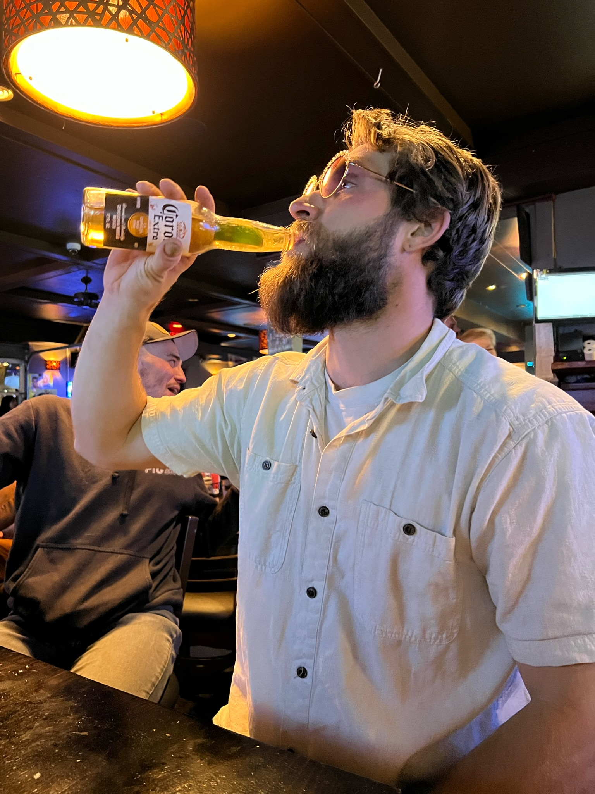

|  |
Nathaniel EwingWeb Devloper & Entrepreneur Hello! I aim to use my creativity, project management, and orginzational skills to help add value and helo you achive your goals. At a highlevel I have over 5 years in project planning, project managment, logistics. Zoomed in a little, I have started and operated my own businesses in both tourisum (In Alaska), we acted as the leason between the visiting super yaghts and the local communities in SE Alaska. I used my network of other businesses and local vendors to deliver the highest level of service to our guests. and Constuction (In Oregon). I have been apart team effort planned projects for |
| 2021-Present | Alaskana Design LLC - I worked as a general contractor in Oregon, remodeling homes and bringing them to modern condition. |
| 2019-Present | Champion Fungi LLC - I Started a mushroom cultivation business, cultivating both functional and medicinal mushrooms to be used for therapeutic purposes in Oregon. |
| 2017-2021 | Exclusively Alaska LLC - I owned and
operatated
Exclusively Alaska, To service multi million dollar yachting operations in southeast Alaska,
creating, prject mangaging, and planning itineraries for some of the most wealthy people in the world. |
| 2014-2017 | World Travel & Street Smarts - Age of 20 I boarded a plane with the intention to never return, |
| Skiing | ⭐️⭐️⭐️⭐️⭐️ |
| Coding | ⭐️⭐️ |
| Growing Mushrooms | ⭐️⭐️⭐️⭐️ |